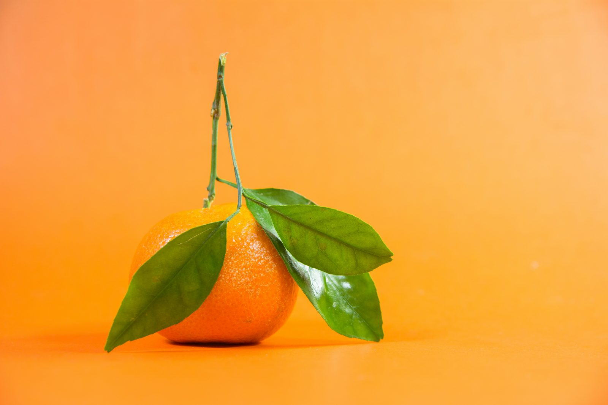
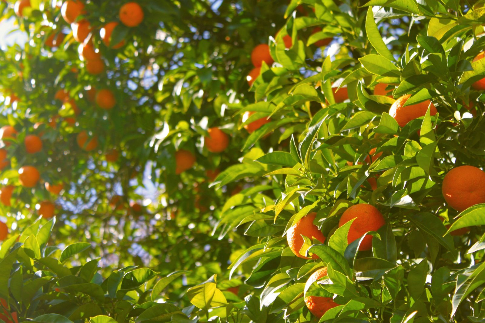
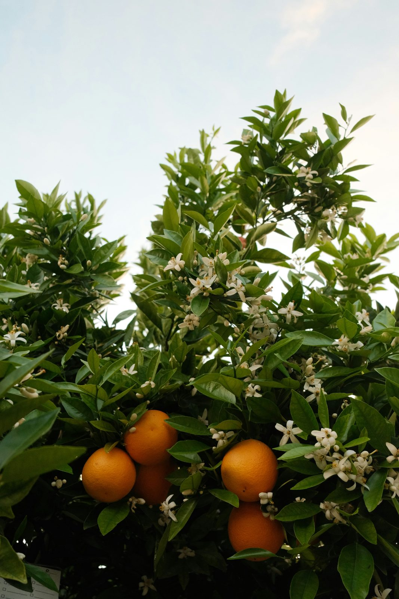
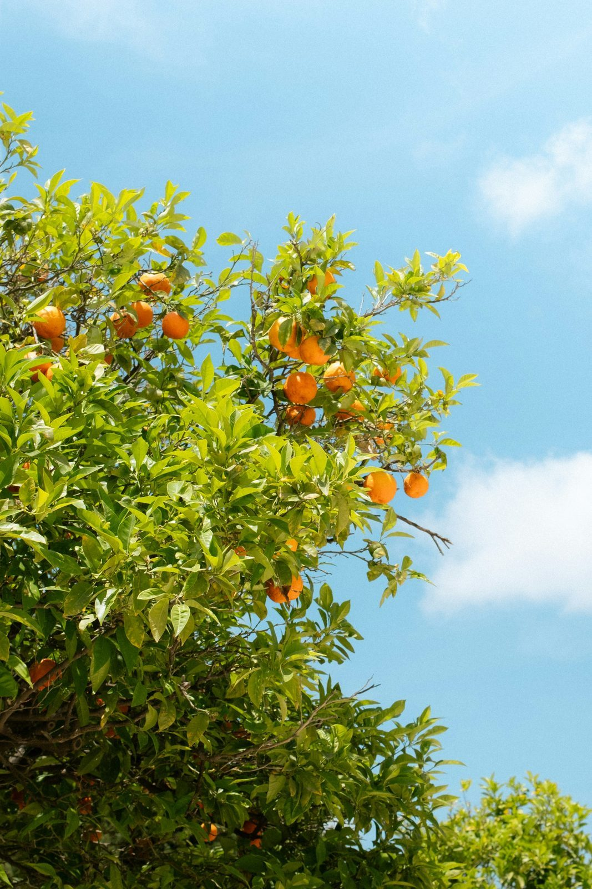
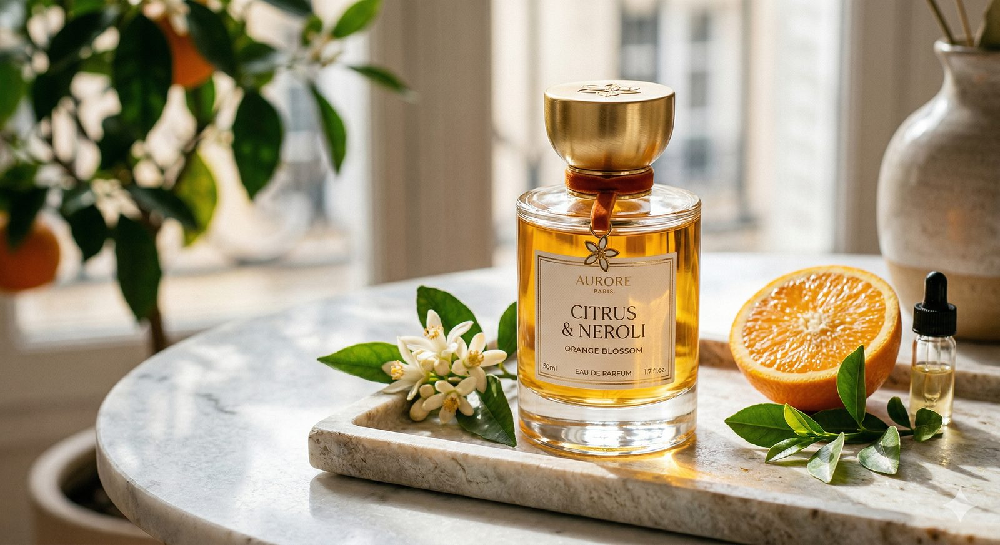
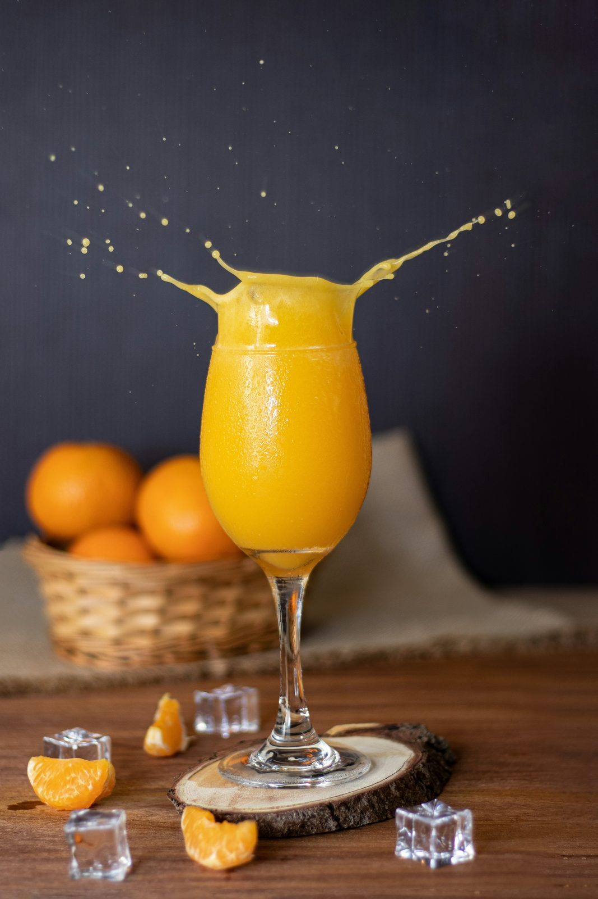

橙的故事
公元前 2200 年
橙子最早出现在中国南方，被视为吉祥之果。
15 世纪
葡萄牙水手将甜橙带到欧洲，一时风靡贵族花园。
17 世纪
法国凡尔赛宫建起著名的"橙园"，象征财富与阳光。
今天
每年全球种植超过 7000 万吨橙子，依然甜蜜如初。

常绿、挺拔、四季有香。一棵橙子树，是一座微型的太阳花园。

原产于亚洲，喜阳耐温，叶片肥厚油亮，是地中海与江南庭院的常客。

春末初夏，雪白橙花缀满枝头，香气清甜，是天然的香水原料。

从青涩到金黄，一颗橙子需要 8-12 个月的阳光与等待。
清晨剥开一颗橙子时，指尖留下的那缕气息—— 柑橘调香水，正是为这一瞬而生。

一杯鲜榨橙汁里，藏着 3 颗橙子的阳光。 维他命 C、果香、与早晨的第一束光，一起被装进玻璃杯。

橙子最早出现在中国南方，被视为吉祥之果。
葡萄牙水手将甜橙带到欧洲，一时风靡贵族花园。
法国凡尔赛宫建起著名的"橙园"，象征财富与阳光。
每年全球种植超过 7000 万吨橙子，依然甜蜜如初。
用镜头凝住阳光，让一颗橙子在慢动作里绽放。
橙子 是世界上最受欢迎的水果之一
而在所有橙子里 大家尤其偏爱——
大橙子
黄澄澄 圆滚滚 香喷喷
一口咬下去 满嘴都是阳光的味道
所以啊 人人都爱大橙子
……
可是吃着吃着 我忽然发现一件奇怪的事——
我好像 不太是在想"大橙子"
我在想的 是大"程"子
嗯 念错了吗
没念错
想知道她是谁 🍊